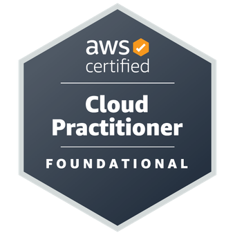

Engenheira de Software Backend | Java | AWS
Engenheira de Software com foco em desenvolvimento Backend, especializada em Java e infraestrutura em nuvem AWS. Experiência prática no ciclo completo de desenvolvimento de software (SDLC), atuando desde a modelagem de dados e criação de APIs robustas até o monitoramento em produção com ferramentas de SRE. Apaixonada por resolver problemas complexos com código eficiente, escalável e seguro.
CLT 5/2026 - O momento
Projetos: Modernização e desenvolvimento do portal 360i para Recuperação de crédito PJ.
Atividades: Desenvolvimento de sistemas **Backend em Java**, implementação de infraestrutura como código na AWS e suporte a aplicações críticas.
Tecnologias: Java, SpringBoot, Git, AWS, Kafka, Datamesh, SQL, DynamoDB, Aurora DB, Performance for All, DataDog, Grafana, Splunk.
Contrato de estágio | Jun 2024 - Nov 2024
Projetos: Modernização do Sistema SIGA Saúde.
Atividades: Atuação no mapeamento de requisitos, apoio no ciclo de vida de desenvolvimento (SDLC) e execução de testes funcionais.
Tecnologias: SQL, AzureDevOps, Postman, Oracle SQL Developer.
Projeto Open Source | Jun 2023 - Jun 2024
Atividades: Liderança técnica do time de Frontend (Angular) e colaboração no desenvolvimento **Backend (Java)** para uma plataforma de manipulação de arquivos.
Tecnologias: Java 17, Spring Boot, Angular, TypeScript, PostgreSQL, Docker, Prometheus/Grafana.
API robusta desenvolvida para gestão de estúdios de impressão 3D, cobrindo desde o cadastro de clientes até a fila de produção.
Destaques Técnicos: Segurança robusta com JWT, Modelagem de dados complexa (PostgreSQL), tratamento global de erros e padronização de respostas.
Stack: Java 21, Spring Boot 3, Spring Security, JWT, JPA/Hibernate, PostgreSQL, Docker.
Ver RepositórioExperiências anteriores que consolidaram habilidades de resolução de problemas, comunicação e trabalho sob pressão.

Quando não estou programando, gosto de:
E claro, passar tempo com minha cachorrinha salsicha, a Bella! 🐾